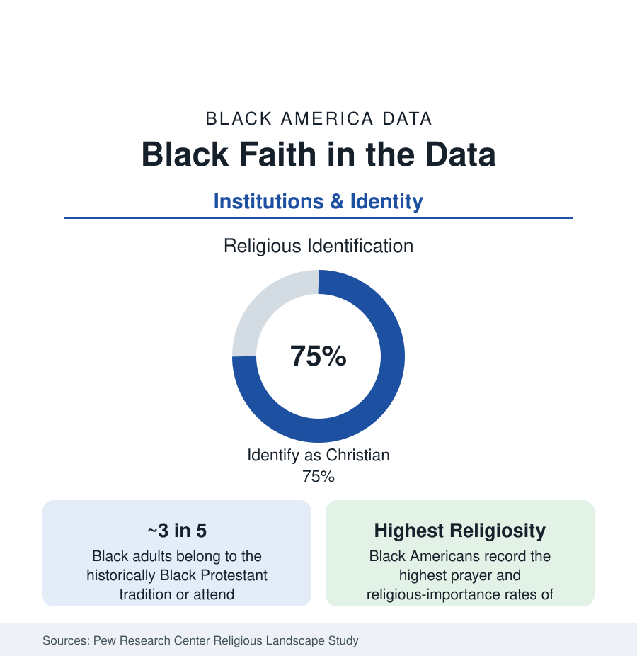

Black Census
Black Religion: The Church in the Data
About three-quarters of Black Americans identify as Christian, and the Black church remains the community's most durable institution. The Pew religious landscape data.

By every measure the survey houses keep, Black Americans are the most religious population in the United States: roughly three-quarters identify as Christian, about three in five are tied to the historically Black Protestant tradition, and the rates of prayer, attendance, and stated religious importance run at the top of every Pew table. The Black church is also, in the institutional data, the community's oldest continuously operating institution — its largest property holder, its civic switchboard, its welfare floor. This article reports the religion data.
The Denominational Map
Pew's landscape studies draw the structure: the historically Black Protestant traditions — the National Baptist conventions (the largest Black denominations, in the millions of members by their own counts), the African Methodist Episcopal, AME Zion, and Christian Methodist Episcopal churches (the independent Black Methodism of 1787–1816), the Church of God in Christ (the largest Black Pentecostal body, Memphis-headquartered), and the Progressive Baptists — together claim the affiliation of a plurality of Black Americans. Black Catholics form a population of several million (roughly one in twenty Black adults in the Pew data, concentrated in Louisiana's Creole parishes, the Gulf, Baltimore-Washington, and Chicago), Black members of evangelical and mainline (white-majority) denominations form a substantial and growing share, and Islam holds a distinctive place: roughly one in five American Muslims is Black in the Pew estimates, the indigenous Black Muslim tradition (and its immigrant overlap) forming one of the faith's American pillars. The unaffiliated — the 'nones' — are the growth file: rising from the low teens to around a fifth or more of Black adults across the recent landscape editions, concentrated among the young in the generational pattern every faith now records.
Practice: The Intensity Data
Affiliation understates the phenomenon; the practice measures are the file's signature. Black adults report praying daily at rates around or above half the population in the Pew series — the highest of any racial demographic — and monthly-plus attendance rates that lead the national table alongside it; the 'religiously unaffiliated but spiritual' measures (importance of spirituality, belief measures) run high even among Black nones, distinguishing the Black secularization curve from the white one in the researchers' analyses. The congregation data supply the texture: the median Black congregation is small and old, the megachurch tier (Black-led megachurches number in the scores in the Hartford data) draws the attendance concentration, and the storefront and streaming-era ministries re-form the supply side in the current counts. Women's participation is the institution's demographic engine — Black women attend, pray, and hold congregational office at rates that make the church, in the sociologists' phrase, a female institution with male pulpits, a gender distribution the leadership data state plainly.
The Church as Institution: Property, Welfare, Politics of Data
The institutional data extend past worship: the Black church is among the largest Black-controlled real-estate holders in most cities of this reference (the edifice, the lots, the development arms — several of the city profiles' affordability projects are church-built), its CDC (community development corporation) layer runs housing and services on public contracts, and its benevolence systems are the food and emergency-aid data's capillary network. The civic data are structural: the congregation is the community's most-trusted institution in the survey series, its voter-registration and mobilization role a measured feature of the turnout data (the political scientists' 'souls to the polls' literature quantifies the church-network effect), and its clergy the community's most accessible professional class. The COVID era's data tested the institution in public: congregations as testing and vaccination sites posted the access data the vaccination profile credited, and the streaming transition's attendance accounting is the current measurement frontier.
The Generational Shift
The trend lines every denomination now faces run steeply in the young cohorts: Black millennials and Gen Z report lower affiliation and attendance than their grandparents at the same age in the longitudinal comparisons — while retaining belief and spirituality measures at rates far above their white peers' — a pattern the researchers describe as institutional loosening without secularization proper. The responses in the data: the nondenominational share's growth (the tradition's center of gravity shifting from the historic denominations toward independent and nondenominational Black churches in the congregation counts), the digital ministry economy, and the historic denominations' own membership declines recorded in their yearbooks. The Black church's data obituary has been drafted by every generation since the Great Migration; the institution's measured persistence — affiliation, attendance, giving, and trust all still at or near the top of the national tables — is the file's standing correction.
Reading the Religion Data
No other institution appears in every section of this reference — the church is landlord, lender of last resort, school founder, clinic site, concert hall, and civic hall in the data of the other six tabs — and its own table explains why: the most-practiced faith in America, organized through the community's own denominations for two and a half centuries. Demographers measure churches in members; Black America measures this one in functions, and the functions are all in the numbers.
More in Black Census
The Black Population of the United States: Size, Definitions, and Distribution
The Black population of the United States totals 52.8 million — 15.4 percent of the nation. How the Census Bureau defines and counts the population, and where it lives.
Black Median Household Income in the United States
Black median household income stands at $56,490 in the Census Bureau's annual income report — how the figure is measured, how it compares, and what drives it.
The Black Poverty Rate: Levels, Children, and the Long Trend
The official Black poverty rate is 17.1 percent — against 11.1 percent nationally and 7.7 percent for non-Hispanic White Americans. How poverty is measured and what the data show.
Source: Pew Research Center, Religious Landscape Study and Black Americans' religious experiences surveys; Public Religion Research Institute; Hartford Institute church data.